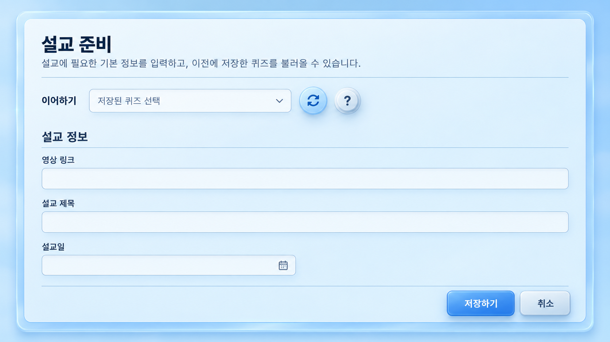
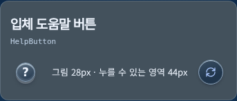

제작 단계와 입체 조작 버튼
실제 새 퀴즈 만들기 · 카세트 단계 버튼 · 작은 도움말 버튼
여섯 번호는 항상 보입니다. 이전 단계는 눌리고, 현재 단계는 실행색 경계로 표시됩니다. 아직 열 수 없는 단계는 작은 자물쇠와 ‘대기’로 구분합니다.
생성 시안
 배치와 입체감 참고용 생성 이미지. 실제 저장 기능이나 문구를 증명하는 화면이 아닙니다.
배치와 입체감 참고용 생성 이미지. 실제 저장 기능이나 문구를 증명하는 화면이 아닙니다.
입력 영역의 시각적 위계 참고 시안.
실제 구현 · 연습 자료
실제 React 화면에 합성 검사 자료를 연결했습니다. 3단계까지 열 수 있고 4–6단계는 잠겨 있습니다. 이미지를 누르면 원본으로 열립니다.
새로고침과 작은 도움말 버튼

실제 5173 · 빈 새 작업 화면
기존 작업을 저장하거나 변경하지 않고 촬영했습니다. 이어하기 목록에는 기존 로컬 연습 작업만 나옵니다.